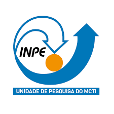

Sistema de Gerenciamento de Portfólio do INPE - V2.0
Menu
Buscar
Home
Cadastrar
Novo projeto
Novo programa
Novo colaborador INPE
Novo colaborador externo
Nova organização externa
Relatórios
Lista de projetos
Lista de programas
Lista de serviços
Projetos x Programas
Ajuda
Sobre
Dúvidas frequentes
Opiniões e perguntas
Catalago de iniciativas
Cadastro de projeto
Identificação
Alinhamento 1
Alinhamento 2
Geração de Impacto
Descrição Detalhada
Stakeholders
Escopo
Equipe
Custos e Plano Orçamentário
Riscos
Histórico
Nome do Projeto *
Processo SEI do Projeto *
Protocolo SEI da última versão do TAP que foi aprovada para compor o Portfólio Institucional
BIG - Base de Informações Georreferenciadas
Queimadas
Biomas
AdaptaBrasil
Satélites Científicos
SATÉLITES BASEADOS NA PLATAFORMA MULTIMISSÃO (PMM)
Pequenos Satélites
Desenvolvimento de propulsores a propelentes líquidos para aplicação em satélites
Amazonia-1
Programa CBERS
Pesquisa e desenvolvimento em dinâmica de órbita e atitude de veículos espaciais utilizando controle em malha fechada
Estudo e Monitoramento Brasileiro de Clima Espacial - EMBRACE
ATCOPDT- Atividades de Coordenação de Pesquisa Aplicada e Desenvolvimento Tecnológico
Modelo Comunitário do Sistema Terrestre Unificado
Programa de Capacitação Institucional - PCI
Chamada Pública MCTI/FINEP/FNDCT/AÇÃO TRANSVERSAL - SOS EQUIPAMENTOS 2021 AV 01
Plataforma para Satélite Classe 200 kg
Programa de Monitoramento da Amazônia e demais biomas - PAMZ+
BiomasBR-MCTI
INPE e Sociedade
Programa de Síntese em Ciência do Sistema Terrestre
Rede SONDA - Sistema de Organização Nacional de Dados Ambientais
COOPERAÇÃO ENTRE A NOAA E O INPE EM OBSERVAÇÃO DA TERRA PARA O DESENVOLVIMENTO DE TÉCNICAS AVANÇADAS DE MODELAGEM NUMÉRICA E ASSIMILAÇÃO DE DADOS
Prediction and Research Moored Array in the Tropical Atlantic - PIRATA
Sistema MonitoraEA
Interação com a UFSM para fortalecer a presença do INPE na região Sul do Brasil
BiomasBR
Programa Base de Informações Georreferenciadas
Astrofísica de Ondas Gravitacionais
Programa Associado
One
Two
Three
Processo SEI do Programa Associado
One
Two
Three
Responsável pelo Projeto *
CGGO
CGGO/COADM
CGGO/COGRH
CGGO/COTIC
CGGO/COPOA
CGGO/COENE
CGGO/COESU
CGGO/COECO
CGGO/COEAM
COGAB
COGAB/SEREL
COGAB/SECOM
COAND
COAND/SEAND
COGPI
COGPI/DIPE1
COGPI/DIPE2
COGPI/DIPE3
COGPI/DIPE4
COGPI/SEPEC
COGPI/SEGQP
COEPE
COEPE/DIBIB
COEPE/DIPGR
COEPE/DIFPD
COEPE/DIEXC
CGCT
CGCT/DIOTG
CGCT/DIIAV
CGCT/DIPTC
CGCT/DIMNT
CGCT/DISSM
CGCE
CGCE/DIAST
CGCE/DICEP
CGCE/DIHPA
CGCE/DIMEC
CGCE/DIEEC
CGCE/DISEP
CGCE/DIPST
CGCE/SEGPR
CGIP
CGIP/COPDT
CGIP/COMIT
CGIP/COIDS
CGIP/CORCR
Unidade Responsável *
CGGO
CGGO/COADM
CGGO/COGRH
CGGO/COTIC
CGGO/COPOA
CGGO/COENE
CGGO/COESU
CGGO/COECO
CGGO/COEAM
COGAB
COGAB/SEREL
COGAB/SECOM
COAND
COAND/SEAND
COGPI
COGPI/DIPE1
COGPI/DIPE2
COGPI/DIPE3
COGPI/DIPE4
COGPI/SEPEC
COGPI/SEGQP
COEPE
COEPE/DIBIB
COEPE/DIPGR
COEPE/DIFPD
COEPE/DIEXC
CGCT
CGCT/DIOTG
CGCT/DIIAV
CGCT/DIPTC
CGCT/DIMNT
CGCT/DISSM
CGCE
CGCE/DIAST
CGCE/DICEP
CGCE/DIHPA
CGCE/DIMEC
CGCE/DIEEC
CGCE/DISEP
CGCE/DIPST
CGCE/SEGPR
CGIP
CGIP/COPDT
CGIP/COMIT
CGIP/COIDS
CGIP/CORCR
Unidade(s) Executora(s) *
Desenvolimento Tecnológico
Pesquisa científica (básica)
Pesquisa tecnológica (aplicada)
Infraestrutura
Administrativo
Desenvolvimento de software
Indefinida
Extensão e Ensino
Serviço Técnico Especializado
Categoria do Projeto *
Novo
Em andamento
Paralisado
Concluído
Situação do Projeto *
Duração Estimada do Projeto (meses)
Data de Início do Projeto
Data de Conclusão do Projeto
Em análise
Devolvido ao proponente para ajustes
Aprovado pela coordenação
Reprovado pela coordenação
Classificado como atividade - Devolvido ao proponente
Classificado como programa - Devolvido ao proponente
Aprovado pela coordenação - Parceria pendente
Aguardando aprovação da coordenação
Aguardando aprovação da coordenação - Parceria pendente
Apto para Portfólio INPE - Parecer Direção pendente
Incluído no Portfólio Insitucional de Iniciativas e deferido no MCTI
Incluído no Portfólio Institucional de Iniciativas
Incluído no Portfólio Insitucional Iniciativas e submetido ao MCTI
Encaminhado ao GGPIN
Devolvido ao proponente após análise do GGPIN
Aguardando aprovação da Direção
Suspenso
Cancelado
Encaminhado ao GGPIN - Memor. complementar ao TAP
Pronto para encaminhar para aprovação do Diretor
Deferido no MCTI e pendente no Portfólio Institucional de Iniciativas
Submetido ao MCTI e pendente no Portfólio Institucional de Iniciativas
Devolvido ao proponente após análise do CA/AdHoc
Situação do TAP *
Aprovação da UORG
Aprovação para Portfólio INPE
Carregamento no SIGE3P
Objeto do Projeto
Descrição do Projeto
Não é projeto prioritário do INPE
É projeto prioritário do INPE
Prioridade INPE
Evidência da priorização pelo INPE
Sem parceria
Parceria nacional
Parceria internacional
Parceria nacional e internacional
Parceria - falta SEPEC identificar se nac/int
Parceria nacional sem recursos financeiros
Parceria nacional com recursos financeiros
Parceria internacional sem recursos financeiros
Parceria internacional com recursos financeiros
Parceria nacional e internacional sem recursos financeiros
Parceria nacional e internacional com recursos financeiros
Tipo de Parceria
Não implementada
Implementada
Encerrada
Situação da Parceria
Processo SEI da Parceria
Sem Propriedade Intelectual
Desenho Industrial
Marca
Patente
Programa de Computador
Propriedade Intelectual
Até R$ 100.000
Maior que R$ 100.000 até R$ 1.000.000
Maior que R$ 1.000.000 até 10.000.000
Maior que R$ 10.000.000 até 100.000.000
Maior que R$ 100.000.000
Faixa de Custo Total do Projeto
Sem recursos
Recursos parciais
Recursos totais
Recursos Financeiros Disponiveis
OE-1: Aumentar a eficiência e eficácia no estabelecimento de relacionamentos institucionais.
OE-2: Aperfeiçoar, implementar e estabelecer métodos, processos e ferramentas de gestão de portfólio, de programas, de projetos, de operações, e de gestão da inovação.
OE-3: Estabelecer, implementar e aperfeiçoar métodos, processos e ferramentas de governança e de gestão organizacional.
OE-4: Recuperar e aprimorar a capacidade institucional adequada, em termos de recursos humanos, orçamentários, de infraestrutura científica, tecnológica e administrativa, e de tecnologia da informação e comunicação.
OE-5: Reforçar o caráter nacional da atuação do INPE, por meio de suas unidades regionais e de parcerias estratégicas.
OE-6: Aperfeiçoar a estrutura de comunicação e divulgação do instituto.
OE-7: Implementar programas institucionais de gestão de competências, promoção da cultura organizacional e de retenção do conhecimento científico e tecnológico.
OE-8: Atualizar e expandir a infraestrutura técnica e de pesquisa, e a capacidade operacional do INPE.
OE-9: Ampliar e aperfeiçoar as formas de viabilização e financiamento dos projetos e atividades do INPE.
OE-10: Fortalecer a capacidade e manter o protagonismo do INPE na concepção e execução de missões espaciais.
OE-11: Fortalecer a capacidade e manter o protagonismo do INPE em pesquisa, desenvolvimento, identificação e provimento de tecnologias espaciais habilitadoras para o Programa Espacial Brasileiro.
OE-12: Desenvolver pesquisa básica e aplicada em Ciências Espaciais, e desenvolver instrumentação científica competitiva.
OE-13: Expandir a capacidade do sistema de estudos e monitoramento brasileiro de clima espacial.
OE-14: Manter o pioneirismo no desenvolvimento de ciência de ponta, e prover tecnologias, produtos e serviços inovadores em sensoriamento remoto e ciência de dados geoespaciais, ambientais e geoinformática voltados à aplicação de estudos da ciência do sis
OE-15: Fortalecer a atuação do INPE em pós-graduação, pesquisa e extensão.
OE-16: Promover o alinhamento e a cooperação entre os programas de pós-graduação e os desenvolvimentos científicos e tecnológicos realizados no INPE.
OE-17: Ampliar a capacidade de monitorar todos os biomas e o oceano nacionais com a produção de dados e informações ambientais estratégicas.
OE-18: Aprimorar e desenvolver modelos numéricos, empíricos, teóricos e estatísticos do sistema terrestre, provendo informações ambientais em diversas escalas temporais e espaciais.
OE-19: Promover e aprimorar a pesquisa e o desenvolvimento em atividades integradas de observação, modelagem, cenários e síntese no contexto do sistema terrestre.
Objetivos Estratégicos do INPE
Meta não definida
M-1.1: Elaborar um plano para aperfeiçoar os processos, os métodos e as ferramentas para o estabelecimento de parcerias institucionais e acadêmicas.
M-2.1: Aperfeiçoar, evoluir e implementar normas, processos, métodos e ferramentas para a gestão de portfólio de programas e de projetos do INPE.
M-2.2: Elaborar de forma colaborativa um roadmap institucional para pesquisa, desenvolvimento tecnológico e inovação.
M-2.3: Aperfeiçoar, evoluir e implementar normas, processos, métodos e ferramentas para a gestão da propriedade intelectual, de forma integrada à gestão de projetos e programas do Instituto.
M-3.1: Formalizar Plano de Gestão Organizacional, por meio do aperfeiçoamento, da adaptação e da complementação do regramento existente.
M-3.2: Implementar o Plano de Gestão Organizacional estabelecido.
M-4.1: Elaborar diagnóstico das capacidades adequadas nas dimensões: recursos humanos, orçamentários, infraestrutura científica, tecnológica e administrativa, tecnologia da informação e comunicação (TIC), considerando os aspectos de sustentabilidade insti
M-4.2: Elaborar planos para o provimento das capacidades diagnosticadas em um período de até quatro (4) anos.
M-4.3: Implementar os planos para o provimento das capacidades diagnosticadas.
M-4.4: Integrar os sistemas corporativos do INPE.
M-5.1: Promover ações integradas entre as unidades finalísticas centrais e as Coordenações Espaciais regionais, alinhadas com a missão e estratégia do INPE.
M-5.2: Realizar eventos de educação e popularização da ciência.
M-5.3: Incluir as Coordenações Espaciais regionais em cooperações de pesquisa e desenvolvimento tecnológico com ICTs e instituições de ensino superior nacionais.
M-6.1: Atualizar o Plano de Comunicação Institucional do INPE.
M-6.2: Implementar o Plano de Comunicação Institucional do INPE atualizado.
M-7.1: Formular diretrizes para um Programa Institucional de Gestão do Conhecimento Científico e Tecnológico, visando propiciar oportunidades de transferência de conhecimento entre servidores por meio de atuação conjunta em projetos reais e estudos dirigi
M-7.2: Elaborar e implementar programas de diversidade, pluralidade, inclusão, ética, e de responsabilidade socioambiental, alinhados à Missão, Visão e aos Valores do Instituto.
M-8.1: Atualizar e expandir os laboratórios e oficinas da Coordenação de Manufatura, Montagem, Integração e Testes (COMIT), com a implantação de meios de testes e área de integração para satélites de grande porte (até 7 metros de dimensão máxima e 5 tonel
M-8.2: Ampliar e readequar a capacidade operacional da Coordenação de Rastreio, Controle e Recepção de Satélites (CORCR).
M-8.3: Atualizar, reorganizar e expandir os laboratórios da Coordenação de Pesquisa Aplicada e Desenvolvimento Tecnológico (COPDT).
M-8.4: Contribuir com publicações, novos produtos e serviços para a área espacial e ambiental por meio de pesquisa aplicada e desenvolvimento tecnológico nas áreas de combustão e catálise, materiais especiais, dispositivos e sensores, modelagem computacio
M-8.5: Ampliar de forma sustentada a capacidade operacional de processamento de alto desempenho e de armazenamento da Coordenação de Infraestrutura de Dados e Supercomputação (COIDS).
M-9.1: Elaborar um plano de ação para ampliar a captação de recursos extraorçamentários.
M-10.1: Conceber e projetar uma plataforma de serviço multimissão nos moldes da PMM para satélites da classe de 200 kg e elaborar a documentação técnica para o atendimento a uma primeira missão espacial que faça uso de tal plataforma.
M-10.2: Prover os equipamentos do Modelo de Engenharia de um satélite usando a plataforma multimissão de 100 kg para integração.
M-10.3: Avançar no desenvolvimento da 3ª geração de satélites CBERS (CBERS-5 e CBERS-6) de sensoriamento remoto, em cooperação com a República Popular da China.
M-10.4: Lançar oito (8) cargas úteis científicas, tecnológicas e de observação da Terra em missões realizadas por nanossatélites (classe 1 kg a 10 kg) e microssatélites (classe 10 kg a 100 kg).
M-10.5: Lançar o satélite Amazonia 1B / missão Aquae, fazendo uso dos equipamentos reserva do Amazonia 1.
M-10.6: Iniciar a integração do modelo elétrico do satélite Amazonia 2, com carga útil de sensoriamento remoto, que inclua a atualização tecnológica de equipamentos da Plataforma Multimissão (PMM), a nacionalização de subsistemas, e a definição de um proc
M-10.7: Desenvolver as cargas úteis da missão EQUARS, alcançando nível de maturidade tecnológica que permita sua operação no espaço.
M-10.8: Concluir a análise de viabilidade, definição e planejamento da execução da missão MIRAX, a partir de análise já realizada pelo Centro de Projeto Integrado de Missões Espaciais (CPRIME).
M-10.9: Concluir a análise de viabilidade, definição e planejamento da execução da missão Galileo Solar Space Telescope (GSST).
M-10.10: Lançar o satélite nanoMIRAX.
M-11.1: Estruturar um Programa de Desenvolvimento de Tecnologias Espaciais, incluindo a definição de fontes de recursos para seu financiamento.
M-11.2: Definir um Processo de Desenvolvimento de Tecnologias Espaciais voltado a fomentar o avanço da maturidade tecnológica.
M-11.3: Concluir o planejamento e iniciar o desenvolvimento de três (3) projetos tecnológicos, preferencialmente com a participação da indústria e instituições de ensino e pesquisa nacionais.
M-11.4: Promover a evolução do nível de maturidade tecnológica de pelo menos duas (2) tecnologias espaciais.
M-11.5: Realizar a validação em voo de pelo menos uma (1) tecnologia (produto, equipamento ou experimento) resultante de projeto de desenvolvimento de tecnologias espaciais.
M-12.1: Contribuir com dois (2) tópicos significativos para o avanço do conhecimento científico mundial nas áreas de Astrofísica, Heliofísica, Ciências Planetárias, Aeronomia, Geomagnetismo ou Clima Espacial.
M-12.2: Conceber e desenvolver um (1) instrumento ou sistema científico competitivo nas áreas de Astrofísica, Heliofísica, Ciências Planetárias, Aeronomia, Geomagnetismo ou Clima Espacial.
M-12.3: Ampliar em 10% a difusão de pesquisas científicas básicas e aplicadas em todas as áreas da CGCE, considerando a média dos cinco últimos anos até 2021.
M-12.4: Desenvolver modelos (físicos, matemáticos e computacionais) de fenômenos em Ciências Espaciais.
M-12.5: Realizar a instalação em um sítio externo do instrumento Telescópio Solar.
M-12.6: Desenvolver o radiotelescópio BINGO (Baryon Acoustic Oscillations In Neutral Gas Observations).
M-12.7: Recuperar e tornar operacional o instrumento BDA (Brazilian Decimetric Array).
M-12.8: Desenvolver e testar no Laboratório Nacional de Astrofísica (LNA) a câmera imageadora em 4 bandas SPARC-4.
M-13.1: Ampliar em 20% o valor agregado (por adensamento, expansão ou atualização) da rede de sensores para o monitoramento do clima espacial.
M-13.2: Disponibilizar novos produtos de clima espacial para melhorar o provimento de índices de impacto na geração de alertas.
M-13.3: Elaborar um plano estratégico para a proteção da infraestrutura tecnológica nacional e seus serviços associados, contra fenômenos do clima espacial severos, em coordenação com órgãos governamentais, agências reguladoras, defesa civil e sociedade.
M-13.4: Realizar eventos em nível nacional ou internacional de interação para sensibilização de usuários e capacitação técnica dos setores potencialmente afetados por fenômenos do clima espacial, especialmente os sistemas globais de navegação por satélite
M-13.5: Participar de fóruns internacionais para padronização dos serviços de clima espacial.
M-13.6: Promover a colaboração interinstitucional para o desenvolvimento de centros regionais e globais de alerta para o Clima Espacial.
M-14.1: Desenvolver metodologias inovadoras para tratar com grandes bases de dados de satélites de sensoriamento remoto da superfície e da atmosfera, e de radares meteorológicos, bem como bases de dados numéricos observados ou estimados, coletados por múl
M-14.2: Aprimorar a geração de dados e produtos derivados de satélites para aplicações em sistemas de assimilação de dados do Modelo Comunitário do Sistema Terrestre Unificado e de produtos derivados, pela geração de conjuntos com registros de metadados n
M-14.3: Prover e aprimorar previsão numérica de tempo e de clima sazonal, e projeções de mudanças climáticas por meio de modelagem do sistema terrestre, bem como produtos meteorológicos derivados de satélites e de radares, aos órgãos setoriais de Meteorol
M-14.4: Conceber e projetar plataforma computacional de alto desempenho para o gerenciamento, integração, processamento e disponibilização de dados geoespaciais, composta por portal web que integre catálogos de metadados, interfaces de acesso por programa
M-14.5: Implementar um site espelho para o arquivamento, a reutilização e a disseminação das imagens dos satélites Sentinel-1, Sentinel-2 e Sentinel-3, sobre a extensão do território brasileiro, incluindo a Amazônia Azul.
M-14.6: Promover o uso e a disseminação de imagens, tecnologias e serviços espaciais para o gerenciamento de desastres.
M-14.7: Realizar pesquisas e desenvolver metodologias de análise do nexus água / energia / alimento / floresta, atendendo às necessidades da sociedade e visando a segurança hídrica, energética, alimentar e socioambiental.
M-15.1: Formular e implementar um programa para consolidar a internacionalização da pós-graduação, incluindo o doutorado em cotutela.
M-15.2: Sediar no INPE (organizar) eventos científicos internacionais com a participação ativa da pós-graduação.
M-15.3: Criar mecanismos de interação nacional da pós-graduação do INPE com o setor produtivo na vertente de formação de pessoas.
M-15.4: Ampliar a interação do INPE com a sociedade por meio de atividades de extensão e de serviços voluntários.
M-16.1: Formular e implementar um programa de integração dos estudantes e bolsistas de pós-graduação nos projetos e programas institucionais e na infraestrutura laboratorial do INPE.
M-16.2: Implementar um processo padronizado de autoavaliação e planejamento estratégico dos programas de pós-graduação do INPE.
M-17.1: Produzir, aprimorar e ampliar as séries históricas de dados fundamentais sobre monitoramento das mudanças de uso e de cobertura da terra, para todos os biomas nacionais.
M-17.2: Produzir e manter as séries históricas de dados sobre ocorrência, extensão e severidade de queimadas e incêndios florestais e de risco de fogo, em todos os biomas nacionais.
M-17.3: Criar um sistema operacional automatizado para estimar anualmente a remoção e a emissão de CO2, a partir de dados de regeneração da vegetação, e de dados de desmatamento e degradação da vegetação.
M-17.4: Promover e aprimorar a pesquisa baseada em séries históricas de parâmetros e indicadores de quantidade e qualidade da água em sistemas aquáticos continentais, costeiros e oceânicos.
M-18.1: Desenvolver o Modelo Comunitário do Sistema Terrestre Unificado, integrando a comunidade operacional, a de pesquisas e a acadêmica nacional, explorando a vasta base de dados ambientais na assimilação, para prover o Brasil com o estado-da-arte em p
M-18.2: Promover a colaboração interinstitucional e o aprofundamento do trabalho em rede no domínio sul-americano, para realizar pesquisas de aspectos multi-escala, e de processos e interações que resultam em eventos extremos de tempo e clima, com modelos
M-19.1: Elaborar um plano para a expansão da capacidade e dos arranjos institucionais em síntese do sistema terrestre, aprimorando a integração entre as atividades de observação, modelagem, indicadores e cenários.
M-19.2: Implementar o plano para a expansão da capacidade e dos arranjos institucionais em síntese do sistema terrestre.
M-19.3: Consolidar e ampliar a capacidade para a elaboração de estudos integrados, a partir da produção e análise de indicadores socioambientais, para a avaliação de estratégias de transição para a sustentabilidade das metas relativas aos ODS (Objetivos d
M-19.4: Consolidar e ampliar a capacidade para produzir e analisar cenários representando trajetórias para um futuro sustentável, aderentes aos compromissos assumidos pelo país, ou que atendam às demandas do Estado e da sociedade, em uma perspectiva trans
M-19.5: Consolidar e ampliar a capacidade de realizar pesquisa básica, incluindo a coleta, a modelagem e a análise de dados com foco no entendimento de processos fundamentais do sistema terrestre.
Metas Estratégicas do INPE
PLANO DIRETOR 2022-2026
Período Estratégico do INPE
Política Nacacional de Inovação e Política de Inovação do INPE
2021 - Ciência; Tecnologia e Inovações
2025 - Comunicações para o Desenvolvimento; a Inclusão e a Democracia
2034 - Promoção da Igualdade Racial e a Superação do Racismo
2040 - Gestão de Riscos e de Desastres
2041 - Geologia; Mineração e Transformação de Minérios
2046 - Oceanos; Zona Costeira e Antártica
2050 - Mudança do Clima
2056 - Política Espacial
2059 - Política Nuclear
1058 - Mudança do Clima
2204 - Brasil na Fronteira do Conhecimento
2205 - Conecta Brasil
6013 - Oceanos; Zona Costeira e Antártica
2216 - Gestão de riscos e de Desastre
2207 - Programa Espacial Brasileiro
2208 - Tecnologias Aplicadas; Inovação e Desenvolvimento Sustentável
2206 - Política Nuclear
Programa PPA
2016-2019
2020-2023
Período do Programa PPA
Evidência do Alinhamento do Programa PPA
MAPA-1203 - Promover agricultura sustentável.
MAPA-1236 - Promover regularização da ocupação e do domínio da terra.
MMA-1227 - Fortalecer conservação, uso sustentável e repartição de benefícios do uso da Biodiversidade e dos Recursos Naturais.
MMA-1226 - Promover melhoria da qualidade ambiental urbana, com ênfase nos temas prioritários: combate ao lixo do mar, gestão de resíduos sólidos, áreas verdes urbanas, qualidade do ar, saneamento e qualidade das águas e áreas contaminadas.
MMA 1181 - Implementar políticas, ações e medidas p/ enfrentamento da mudança do clima e seus efeitos, fomentando economia resiliente e de baixo carbono.
MMA 1181 - Implementar políticas, ações e medidas p/ enfrentamento da mudança do clima e seus efeitos, fomentando economia resiliente e de baixo carbono.
MMA 1243 - Reduzir o desmatamento e os incêndios nos biomas e aperfeiçoar o controle ambiental.
MDR 1201 - Investir na Compreensão e Redução do Risco, Ampliar a Preparação e Reduzir os Efeitos dos Desastres.
MDR 1174 - Ampliar a Segurança Hídrica.
MME 1208 - Assegurar o suprimento de energia elétrica ao mercado brasileiro em condições adequadas de qualidade e equilíbrio entre segurança e preço, de forma sustentável.
MME 1186 - Ampliar a participação do setor mineral na economia com sustentabilidade, governança, segurança jurídica, estabilidade regulatória e inovação.
MME 1173 - Desenvolver as indústrias do petróleo, gás natural e seus derivados e dos biocombustíveis e promover o abastecimento nacional.
MI 1211 - Incrementar a eficiência, a segurança e a qualidade da aviação civil.
MI 1184 - Promover a eficiência, a qualidade e a segurança do sistema de transporte aquaviário, aumentando a sua disponibilidade e competitividade.
MCTIC 1176 - Otimizar a capacidade científica do país na dimensão dos desafios da realidade brasileira.
MCTIC 1192 - Aumentar a autonomia nacional no atendimento das demandas por produtos e serviços espaciais.
MCTIC 1197 - Promover o empreendedorismo, inovação e tecnologias aplicadas, com aumento do impacto do dispêndio público, amplificando a contribuição para o desenvolvimento sustentável.
MD 1183 - Promover o conhecimento científico e tecnológico, a conservação da biodiversidade, o uso sustentável dos recursos naturais, a gestão efetiva dos espaços costeiro e marinho e os interesses do país nos oceanos e Antártica.
Objetivo do PPA
2020-2023
Período do Objetivo do PPA
Evidência do Alinhamento do Objetivo do PPA
Aeroespacial e defesa
Água
Alimentos
Biomas e bioeconomia
Ciências e tecnologias sociais
Clima
Economia e sociedade digital
Energia
Minerais estratégicos
Nuclear
Saúde
Tecnologias convergentes e habilitadoras
Área Prioritária ENCTI
2016-2022
Período da Área Prioritária ENCTI
Evidência do Alinhamento da Área Prioritária ENCTI
ODS1: Acabar com a pobreza em todas as suas formas, em todos os lugares.
ODS2: Acabar com a fome, alcançar a segurança alimentar e melhoria da nutrição e promover a agricultura sustentável.
ODS3: Assegurar uma vida saudável e promover o bem-estar para todas e todos, em todas as idades.
ODS4: Assegurar a educação inclusiva e equitativa e de qualidade, e promover oportunidades de aprendizagem ao longo da vida para todas e todos.
ODS5: Alcançar a igualdade de gênero e empoderar todas as mulheres e meninas.
ODS6: Assegurar a disponibilidade e gestão sustentável da água e saneamento para todas e todos.
ODS7: Assegurar o acesso confiável, sustentável, moderno e a preço acessível à energia para todas e todos.
ODS8: Promover o crescimento econômico sustentado, inclusivo e sustentável, emprego pleno e produtivo e trabalho decente para todas e todos.
ODS9: Construir infraestruturas resilientes, promover a industrialização inclusiva e sustentável e fomentar a inovação.
ODS10: Reduzir a desigualdade dentro dos países e entre eles.
ODS11: Tornar as cidades e os assentamentos humanos inclusivos, seguros, resilientes e sustentáveis.
ODS12: Assegurar padrões de produção e de consumo sustentáveis. ODS13:
ODS13: Tomar medidas urgentes para combater a mudança climática e seus impactos.
ODS14: Conservação e uso sustentável dos oceanos, dos mares e dos recursos marinhos para o desenvolvimento sustentável.
ODS15: Proteger, recuperar e promover o uso sustentável dos ecossistemas terrestres, gerir de forma sustentável as florestas, combater a desertificação, deter e reverter a degradação da terra e deter a perda de biodiversidade
ODS16: Promover sociedades pacíficas e inclusivas para o desenvolvimento sustentável, proporcionar o acesso à justiça para todos e construir instituições eficazes, responsáveis e inclusivas em todos os níveis.
ODS17: Fortalecer os meios de implementação e revitalizar a parceria global para o desenvolvimento sustentável.
Objetivos de Desenvolvimento Sustentável - Agenda 2030 ONU
Evidência do Alinhamento dos Objetivos de Desenvolvimento Sustentável - Agenda 2030 ONU
Resultados Institucionais: Estimular a pesquisa e a transformação do conhecimento científico em riqueza para a sociedade.
Resultados Institucionais: Impulsionar a aplicação de tecnologias para o desenvolvimento sustentável e o domínio de tecnologias estratégicas.
Resultados Institucionais: Fortalecer o sistema de pesquisa e aprimorar a infraestrutura de CTIC.
Resultados Institucionais: Expandir a presença da inovação e do empreendedorismo no país.
Resultados Institucionais: Estimular a educação científica, a divulgação e a popularização da ciência. Resultados Institucionais: Estimular a educação científica, a divulgação e a popularização da ciência.
Processos Internos: Aperfeiçoar a governança e a gestão corporativa.
Processos Internos: Potencializar a atuação integrada dos atores de CTIC.
Processos Internos: Fortalecer parcerias nacionais e internacionais.
Pessoas e Infra: Desenvolver competências, integrar e valorizar pessoas e captar novos talentos.
Pessoas e Infra: Promover a inovação de processos, produtos e serviços.
Pessoas e Infra: Adequar infraestrutura física e de tecnologia da informação e comunicação.
Orçamento: Otimizar os recursos orçamentários.
Orçamento: Expandir a captação de recursos não orçamentários.
Mapa Estratégico do MCTI 2020-2030
Evidência do Alinhamento do Mapa Estratégico do MCTI 2020-2030
Ambiental: Promover o uso sustentável dos recursos naturais e a transição para uma economia de baixo carbono, com foco na aplicação de tecnologias ambientalmente adequadas que contribuam para o desenvolvimento econômico e social.
Econômico: Alcançar o crescimento econômico sustentado, com foco no ganho de produtividade assegurando a redução das desigualdades sociais e regionais e a sustentabilidade ambiental.
Infraestrutura: Fomentar o desenvolvimento integrado da infraestrutura com foco no ganho de competitividade e na melhoria da qualidade de vida, assegurando a sustentabilidade ambiental e propiciando a integração nacional e internacional.
Institucional: Aprimorar a governança do Estado, com foco na melhoria da entrega de serviços públicos ao cidadão e do ambiente de negócios, e na garantia da soberania nacional.
Social: Promover o bem-estar, a cidadania e a inclusão social, com foco na igualdade de oportunidades e no acesso a serviços públicos de qualidade, por meio da geração de renda e redução das desigualdades sociais e regionais.
Eixos e Diretrizes da Estratégia Nacional de Desenvolvimento Econômico e Social
Evidência do Alinhamento dos Eixos e Diretrizes da Estratégia Nacional de Desenvolvimento Econômico e Social
Aeroespacial e Defesa
Agropecuária Sustentável
Água
Alimentos
Antártica
Antártica - Extensão Tecnológica para inclusão Social
Antártica - Plano de Ação em Ciência, Tecnologia e Inovação para Antártica
Astronomia, satélites, astrofísica
Bioeconomia e Sustentabilidade
Biomas
Biotecnologia
Ciências e Tecnologias sociais
Ciências Humanas e Sociais
Clima
Computação e Tecnologia da Informação
Divulgação Científica e popularização da Ciência e Tecnologia
Economia e Sociedade digital
Empreendedorismo e Inovação
Energia
Matemática, Física e Geofísica
Automação e Robótica
Laboratórios multipropósitos
Minerais Estratégicos
Nanotecnologia
Nuclear
Oceanos
Radiodifusão
Saúde
Sustentabilidade
Segurança Alimentar e Nutricional
Tecnologias Convergentes e Habilitadoras
Tecnologias Assistivas
Tecnologias Educacionais
Tecnologias Sociais
Telecomunicações
Área Temática MCTI
Evidência do Alinhamento da Área Temática MCTI
Espacial; nuclear; cibernética; segurança pública e de fronteiras
Inteligência artificial; internet das coisas; materiais avançados; biotecnologia; nanotecnologia
Indústria; agronegócio; comunicações; infraestrutura; serviços
Cidades inteligentes; energias renováveis; bioeconomia; tratamento e reciclagem de resíduos sólidos; tratamento de poluição; monitoramento, prevenção e recuperação de desastres naturais e ambientais; preservação ambiental
Saúde, saneamento básico, segurança hídrica, tecnologias assistivas
Área de Tecnologias Prioritárias
Evidência do Alinhamento da Área de Tecnologias Prioritárias
Política de Incentivo à inovação e à pesquisa científica e tecnológica no ambiente produtivo.
Política de fomento à inovação tecnológica.
Programa Rota - 2030 - Mobilidade e Logística.
Programa de Debêntures Incentivadas para PD&I.
Iniciativas relacionadas ao Mercosul.
Serviço Brasileiro de Respostas Técnicas (SBRT) como Rede de suporte ao Sibratec.
Política Nacional para o Desenvolvimento da Nanotecnologia.
Política de incentivo à capacitação e competitividade do setor de informática e automação; e dá outras providências. Política Nacional para o Desenvolvimento
Política de incentivos às indústrias de equipamentos para TV Digital e de componentes eletrônicos semicondutores.Plano Nacional de Internet das Coisas.
Programas e Projetos de interesse nacional na área de informática e automação considerados prioritários (PPI).
Políticas Públicas
Evidência do Alinhamento das Políticas Públicas
Outras Políticas Públicas
Evidência do Alinhamento de Outras Políticas Públicas
População brasileira.
Missão do MCTI.
Alta gestão do MCTI.
Alta gestão da unidade de pesquisa.
Área responsável pela execução na Unidade de Pesquisa.
Órgãos de controle.
Metas de políticas públicas.
Impactado
Justificativa
Otimizar a capacidade científica do país na dimensão dos desafios da realidade brasileira.
Promover o acesso universal e ampliar a qualidade dos serviços de comunicação do país.
Aumentar a autonomia nacional no atendimento das demandas por produtos e serviços espaciais.
Promover o desenvolvimento da tecnologia nuclear e suas aplicações.
Promover o empreendedorismo, inovação e tecnologias aplicadas, contribuindo para o desenvolvimento sustentável.
Estimular a pesquisa e a transformação do conhecimento científico em riqueza para a sociedade.
Promover a inovação, transformação e convergência dos serviços de radiodifusão, e aperfeiçoar a normatização que rege o setor.
Impulsionar a aplicação de tecnologias para o desenvolvimento sustentável e o domínio de tecnologias estratégicas.
Fortalecer o sistema de pesquisa e aprimorar a infraestrutura de CTIC.
Expandir a presença de inovação e do empreendedorismo no país.
Estimular a educação científica, a divulgação e a popularização da ciência.
Promover a transformação digital do Brasil.
Aperfeiçoar a governança e a gestão corporativa.
Potencializar a atuação integrada dos atores de CTIC.
Fortalecer parcerias nacionais e internacionais.
Desenvolver competências, integrar e valorizar pessoas e captar novos talentos.
Promover a inovação de processos, produtos e serviços.
Adequar infraestrutura física e de tecnologia da informação e comunicação.
Otimizar os recursos orçamentários.
Expandir a captação de recursos não orçamentários.
Estratégia - Objetivo Estratégico
Perspectiva População Brasileira
Missão MCTI
Perspectiva Alta Gestão MCTI
Perspectiva Alta Gestão INPE
Perspectiva UORG Responsável
Perspectiva Órgãos Controle
Metas Políticas Públicas
Descrição do(s) produto(s)/ serviço(s) que será(ão) entregues
Justificativa do projeto
Resultados esperados
Capacidade técnica operacional
Público alvo
Objetivo geral
Objetivos específicos
Metas do projeto e critérios de sucesso relacionados
TRL 1 - Princípios básicos observados e relatados
TRL 2 - Conceito de tecnologia e / ou aplicação formulada
TRL 3 - Função crítica analítica e experimental e / ou prova de conceito característica
TRL 4 - Validação de componente e / ou placa de ensaio em ambiente de laboratório
TRL 5 - Validação de componente e / ou placa de ensaio em ambiente de laboratório
TRL 6 - Modelo de sistema / subsistema ou demonstração de protótipo em um ambiente relevante (solo ou espaço)
TRL 7 - Demonstração do protótipo do sistema em um ambiente espacial
TRL 8 - Sistema real concluído e "qualificado para voo" por meio de teste e demonstração (solo ou espaço)
TRL 9 - Sistema real "comprovado em vôo" por meio de operações de missão bem-sucedidas
Não aplicável
TRL atual
TRL 1 - Princípios básicos observados e relatados
TRL 2 - Conceito de tecnologia e / ou aplicação formulada
TRL 3 - Função crítica analítica e experimental e / ou prova de conceito característica
TRL 4 - Validação de componente e / ou placa de ensaio em ambiente de laboratório
TRL 5 - Validação de componente e / ou placa de ensaio em ambiente de laboratório
TRL 6 - Modelo de sistema / subsistema ou demonstração de protótipo em um ambiente relevante (solo ou espaço)
TRL 7 - Demonstração do protótipo do sistema em um ambiente espacial
TRL 8 - Sistema real concluído e "qualificado para voo" por meio de teste e demonstração (solo ou espaço)
TRL 9 - Sistema real "comprovado em vôo" por meio de operações de missão bem-sucedidas
Não aplicável
TRL esperado ao fim do projeto
TRL 1 - Princípios básicos observados e relatados
TRL 2 - Conceito de tecnologia e / ou aplicação formulada
TRL 3 - Função crítica analítica e experimental e / ou prova de conceito característica
TRL 4 - Validação de componente e / ou placa de ensaio em ambiente de laboratório
TRL 5 - Validação de componente e / ou placa de ensaio em ambiente de laboratório
TRL 6 - Modelo de sistema / subsistema ou demonstração de protótipo em um ambiente relevante (solo ou espaço)
TRL 7 - Demonstração do protótipo do sistema em um ambiente espacial
TRL 8 - Sistema real concluído e "qualificado para voo" por meio de teste e demonstração (solo ou espaço)
TRL 9 - Sistema real "comprovado em vôo" por meio de operações de missão bem-sucedidas
Não aplicável
TRL final
Requisitos para encerramento do projeto
Sustentabilidade
Objetivo do Projeto
Descrição do Projeto para compor o Catálogo Institucional
Parte interessada
Expectativas e interesses
Requisitos:
Premissas do projeto
Restrições do projeto
Escopo do projeto
Exclusões (não escopo do projeto)
Fatores externos
One
Two
Three
Nome Profissional
Vinculo INPE
One
Two
Three
Organização Externa
One
Two
Three
Nome Profissional Externo
One
Two
Three
Código da área orçamentária
Estruturado orçamento do projeto
Custo total estimado(R$)
Observações sobre o Custo total estimado(R$)
Recursos Orçamentários
Parcerias Nacionais
Parcerias Internacionais
Agências de Fomento
Captação de Recursos Próprios
Disponibilidade Orçamentária/Financeira e Parcerias
Valor Disponível
Instituição
Riscos do Projeto
Evento
Data do registro
One
Two
Three
Responsável pelo registro
Salvar
Cancelar